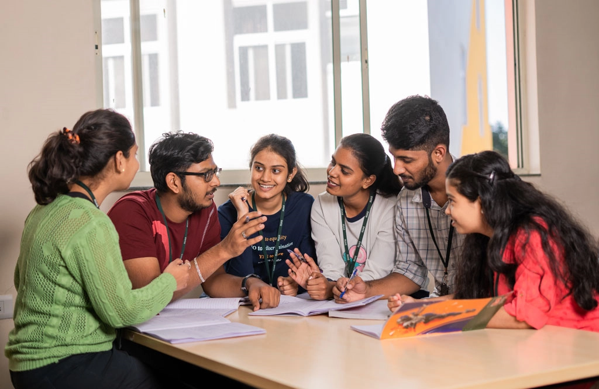

Ramaiah in Frames
Moments that matter!!
Rajyotsava
Dindima

Cultural
Akaira Fest
INARA-Msrit
Akaira Night
Athletics & Sports
Auditorium
Labs

Classroom

M.S. Ramaiah Group of Institutions, established in 1962 by Dr. M.S. Ramaiah, is a premier hub for education, healthcare, and research in India. With more than 20 institutions under its umbrella, it offers diverse programs in engineering, medicine, management, law, arts, and sciences. Known for its academic excellence, state-of-the-art facilities, and a strong focus on innovation, Ramaiah has built a legacy of shaping leaders and professionals who contribute globally. Through its commitment to quality learning and holistic development, it continues to stand as one of the most respected educational groups in the country.
Life at Ramaiah goes far beyond the classroom, with a vibrant campus culture that encourages creativity, collaboration, and personal growth. Students actively participate in annual cultural fests like Utsav, national-level technical events, hackathons, and sporting tournaments that create a lively and enriching experience. The campus is home to numerous student-led clubs, societies, and innovation forums that foster leadership and teamwork. With strong industry collaborations, international tie-ups, and career guidance programs, Ramaiah ensures excellent placement opportunities with leading recruiters across sectors. Its alumni network, spread across the globe, reflects the institution’s achievements in producing successful entrepreneurs, researchers, doctors, engineers, and leaders. Backed by modern hostels, well-equipped labs, libraries, and recreational spaces, Ramaiah provides an environment where education and campus life blend seamlessly, creating a foundation for lifelong success.
At Ramaiah, learning is designed to go hand in hand with innovation and research. Students are encouraged to take part in projects, internships, and industry-driven initiatives that prepare them for real-world challenges. The institutions regularly host guest lectures, international conferences, and workshops, bringing together thought leaders, academicians, and professionals to share knowledge and expertise. This focus on experiential learning ensures that students not only gain academic knowledge but also develop problem-solving, analytical, and entrepreneurial skills that are crucial in today’s competitive world.
Beyond academics, Ramaiah strongly believes in contributing to society through community engagement and social responsibility. Various outreach programs, healthcare initiatives, and awareness campaigns are organized to instill values of empathy and service among students. The institutions also promote sustainability and eco-friendly practices on campus, encouraging students to be responsible global citizens. By combining academic growth, social awareness, and ethical values, Ramaiah nurtures well-rounded individuals who are equipped to lead, inspire, and make a difference in the world.
Moments that matter!!
Leave a Comment